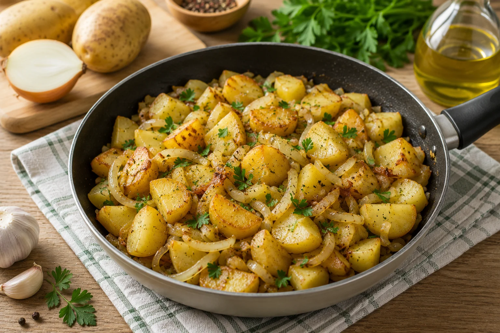
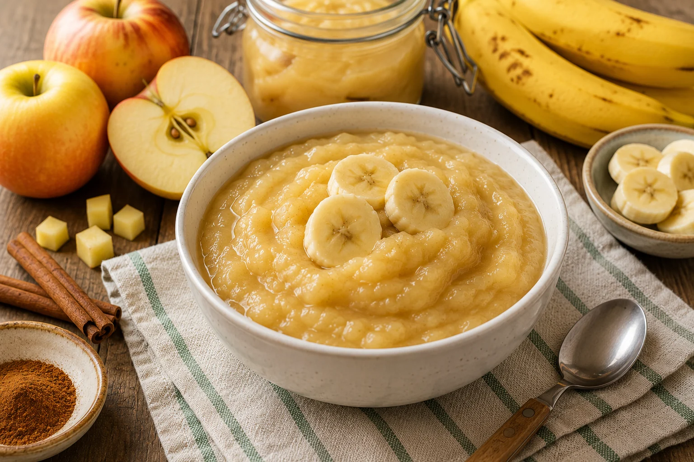
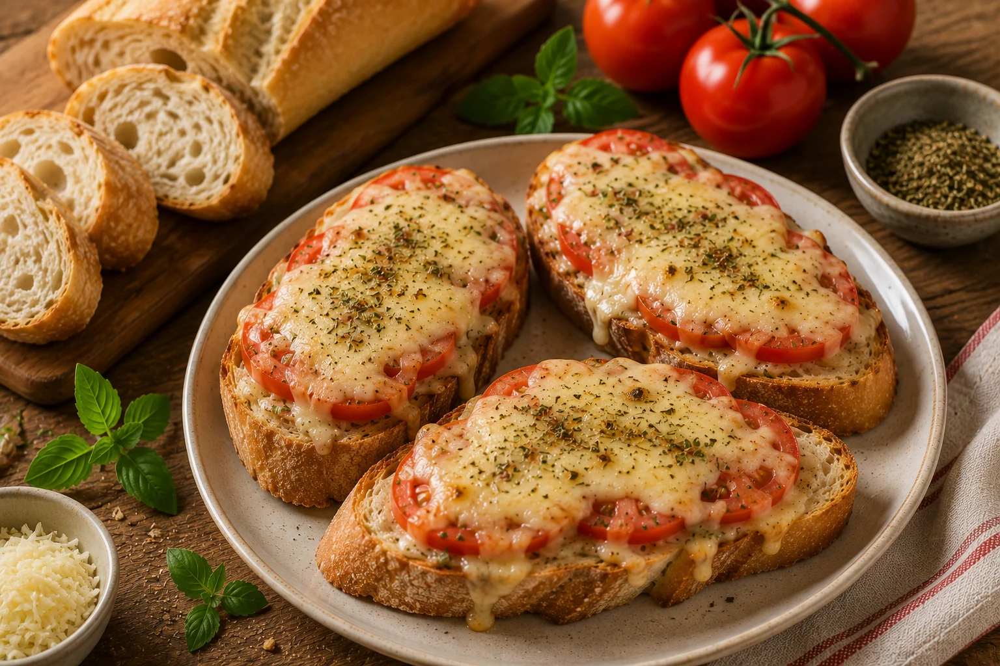
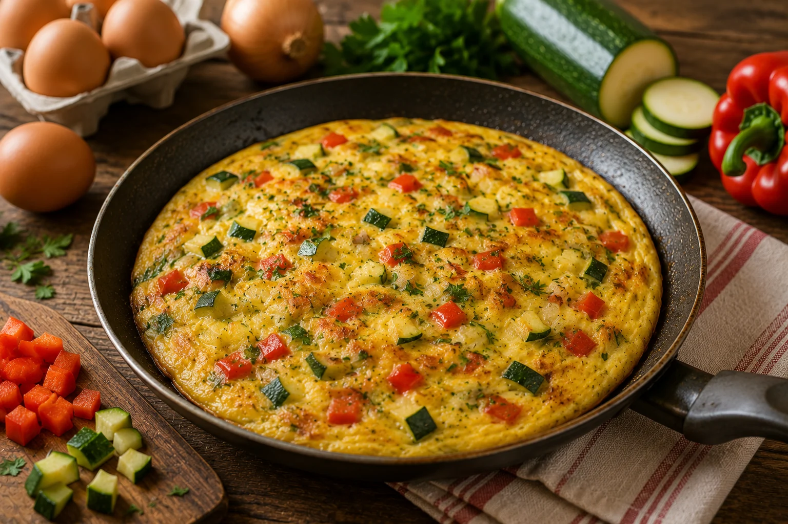
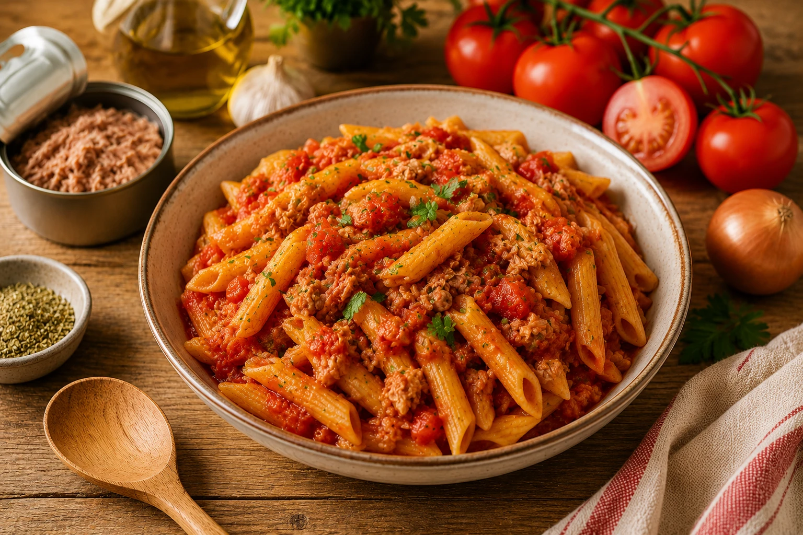
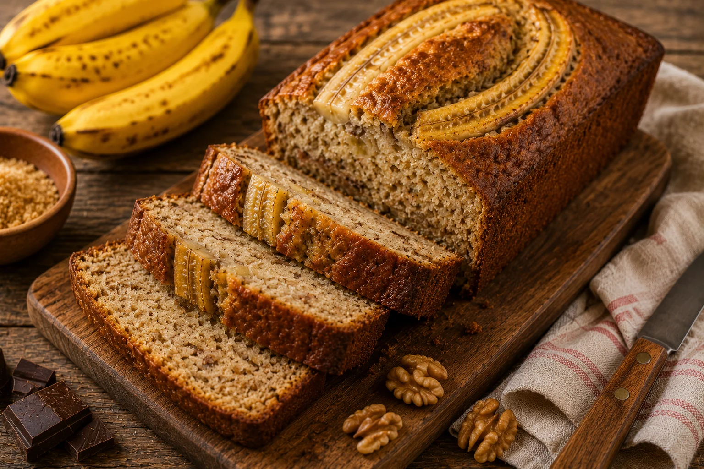
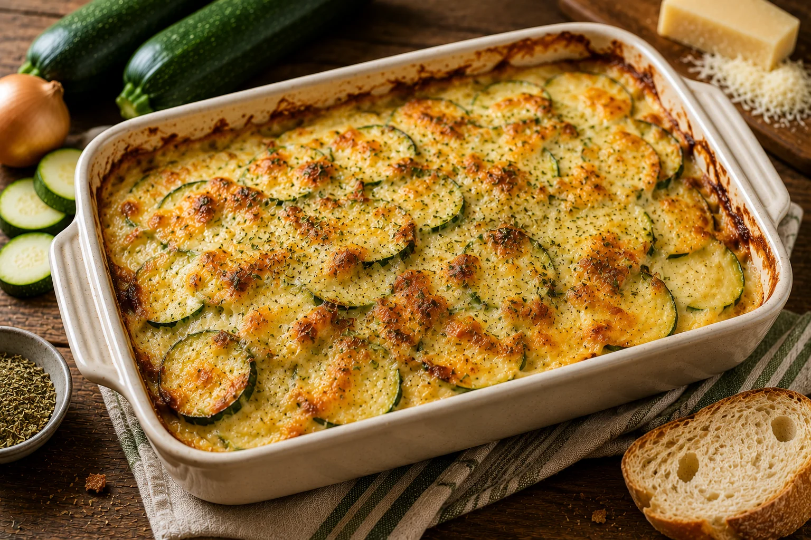
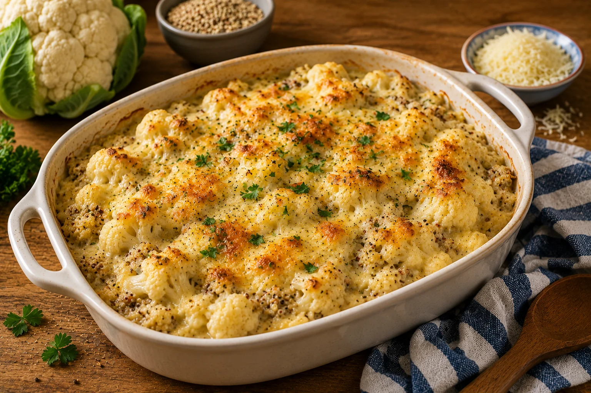

📚 Toutes les recettes
Catalogue des fiches recettes disponibles.



Poêlée de pommes de terre
Une recette simple et accessible : poêlée de pommes de terre.
Voir la recette

Tartines chaudes fromage-tomate
Une recette simple et accessible : tartines chaudes fromage-tomate.
Voir la recette

Pâtes sauce tomate enrichie
Une recette simple et accessible : pâtes sauce tomate enrichie.
Voir la recette
Gâteau simple du placard
Une recette simple et accessible : gâteau simple du placard.
Voir la recette

Chou-fleur et quinoa à la crème
Une recette simple et accessible : chou-fleur et quinoa à la crème.
Voir la recette